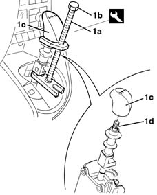
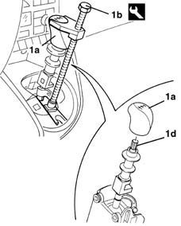

2125C24 gear lever knob - r + r
- Path
- Procedures > 21 GEARBOX > 2125 MANUAL GEARBOX EXTERNAL CONTROLS > 2125C manual gearbox external control (cables) > 2125C24 gear lever knob - r + r
- Kind
- repair procedure (removal / refitting; the operation number is the code)
- Applies to
- engines: 1.2 8v, 1.2 16v, 1.4 16v; all production periods
- Interactive page
- https://sloeber94.github.io/elrnDB-lYpsln/en/#/2429128
Applies to: engines: 1.2 8v, 1.2 16v, 1.4 16v; all production periods
 Removing
Removing
 Refitting
Refitting2125A30 lever/knob cover - r + r
1. Position the tool (1a) as illustrated in the diagram, then adjust the hexagonal end (1b) until the grip (1c) is removed from the socket (1d).
 | Name | Country |
|---|---|---|
1 | Extractor | 1.870.668.000 |

Applies to: engines: 1.2 8v, 1.2 16v, 1.4 16v; all production periods
Refitting
RemovingCheck that the grip is not damaged.
1. Place the grip (1a) in position, then fit the tool as illustrated in the diagram; adjust the hexagonal end (1b) of the tool until the grip is inserted in the gear lever socket (1d).

Applies to: engines: 1.2 8v, 1.2 16v, 1.4 16v; all production periods